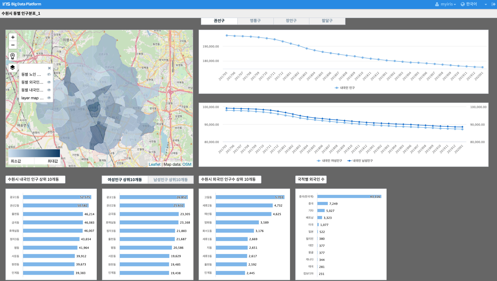

IRIS Studio - 행정 구역 MAP 과 인구 통계 챠트¶
목차¶
설명
최종 보고서 예시
IRIS Studio 따라 하기
설명¶
읍/면/동, 시/군/구 와 같은 행정구역을 지도에 그리고, 행정 구역 별로 구한 데이터를 지도와 챠트 등에 표현해 봅니다. 데이터는 수원시의 구/동별 인구 관련 데이터입니다.
출처 : http://stat.suwon.go.kr/stat/index.do
- 지도 및 챠트에 사용된 데이터 항목
동 단위 내국인 인구, 내국인 남성 인구, 내국인 여성 인구
동 단위 외국인 인구, 외국인 남성 인구, 외국인 여성 인구
동 단위 위국인 국적별 인구
월별 내국인, 외국인 인구 추이
동단위 geoJson
- 수원시 동단위 geoJson 데이터
IRIS 의 Global Table 로 저장합니다.
- 수원시 동단위 인구 데이터
IRIS 의 Local Table 로 저장합니다.
- 수원시 동단위 외국인 인구 데이터
IRIS 의 Local Table 로 저장합니다.
- 수원시 동단위 외국인 국적별 분포 데이터
IRIS 의 Local Table 로 저장합니다.
최종 보고서 예시¶
- 지도의 layer 설명
수원시 행정동 단위 layer
수원시 동별 내국인 인구 layer
수원시 동별 외국인 인구 layer
수원시 동별 노인 인구 layer
{kind=link}
행정구별 내국인 인구 추이 꺾은선 챠트
- 내국인 인구 상위 10개 동에 대한 bar-chart
내국인 인구 상위 10개 동
내국인 여성/남성별 인구 상위 10개동(tab 에서 선택)
- 외국인 인구에 대한 bar-chart
외국인 인구 상위 10개 동 bar-chart
국적별 외국인 분포
IRIS Studio 따라 하기 : 지도¶
수원시 지도 설정¶
첫번째 “layer map(지도)” : open street map 선택합니다.
지도의 기본 위치로 수원 이 오도록 한 후 이 값으로 현재 지도값으로 설정 합니다.

레이어 추가하기¶
- 레이어 3개를 추가로 설정합니다.
각각 보여주려는 아이템 이름으로 layer 이름을 정하는 것을 권장합니다.
- 레이어 보기/숨기기 기능을 이용하면 특정 레이어를 숨길 수 있습니다.
여기서는 데이터 보완이 필요한 “동별 노인 인구수” 레이어를 숨겨 봅니다.
동별 내국인 인구수 레이어 만들기¶
지도 를 선택합니다.
- “동별 내국인 인구수” 레이어 의 데이터를 가져오기 위한 설정값을 입력합니다.
“동별 내국인 인구수” 레이어를 선택합니다.
- IRIS DB 테이블에서 데이터를 가져오므로 DSMS 를 선택합니다.
연결 정보를 콤보박스에서 선택합니다.
- 검색어는 지도 레이어에 필요한 select SQL문을 입력합니다.
검색어 에 입력한 후 미리보기 로 확인해 봅니다.
“동별 내국인 인구수” 레이어는 데이터실행방법설정 에서 자동 실행으로 설정합니다.
- 실행 버튼을 누릅니다.
실행 버튼을 먼저 눌러야 시각화 탭에서 컬럼정보가 보입니다.
{kind=link}
검색어 예시
SELECT
LOCAL_A.STANDARD_DATE_NAME, LOCAL_A.BASIS_DATE, LOCAL_A.GU, LOCAL_A.DONG, LOCAL_A.HOUSEHOLD_COUNT, LOCAL_A.MALE_POPULATION_COUNT, LOCAL_A.FEMALE_POPULATION_COUNT, LOCAL_A.HOUSEHOLD_POLITICAL_PARTY_POPULATION_RATE,
( LOCAL_A.MALE_POPULATION_COUNT + LOCAL_A.FEMALE_POPULATION_COUNT) AS POP_COUNT ,
GB_GEOM.GEOM_JSON
FROM
MYIRIS.SUWON_CITY_STATISTICS_GU_DONG_ACCORDING_TO_POPULATION_STATUS LOCAL_A , MYIRIS.SUWON_DONG_GEOJSON GB_GEOM
WHERE LOCAL_A.BASIS_DATE = 201912 AND GB_GEOM.DONG = replace(LOCAL_A.DONG, ' ', '')
;
레이어 시각화 설정¶
- “동별 내국인 인구수” 레이어의 시각화 탭 부분을 설정합니다.
- 시각화 유형은 도형 으로 선택합니다.
지도에서 수원시의 각 행정동이 다각형 도형으로 표현됩니다.
- 도형의 시각화옵션 은 4개의 설정 탭이 있습니다.
도형 종류는 다각형 , 지도 투명도는 1이 불투명, 0 이 투명입니다.
색상은 각 행정동에 표시되는 내국인 인구의 최소값과 최대값의 범위안에서 그라디언트 로 표현합니다.
지도에 표시되는 데이터는 도형의 꼭짓점 좌표에 해당하는 geoJson 컬럼과 색상을 표현할 내국인 인구수 컬럼을 지정합니다.
툴팁 탭에서 지도위에 커서를 대면 보여지는 정보를 선택합니다.
{kind=link}
동일한 방법으로 다른 레이어의 값들을 설정할 수 있습니다.
IRIS Studio 따라 하기 : 꺾은 선 챠트¶
수원시 4개 구 탭 만들기¶
수원시의 4개 행정구 별로 내국인 인구/ 내국인 여성 인구 / 내국인 남성 인구 에 대한 변화 추이를 그리려고 합니다.
4개 행정구를 탭(tab) 버튼으로 만들어서 구별로 선택하여 꺾은선 챠트를 그립니다.
Studio 메뉴바에서 탭 을 누르고, 원하는 위치에 적절한 크기로 드로우 합니다.
{kind=link}
해당 탭을 선택한 후에 데이터 에서 각 탭의 내용을 입력합니다.
{kind=link}
- 속성 탭에서는 탭을 클릭하면 어떤 변수명으로 이벤트가 전달되는 지 알 수 있습니다.
탭의 값은 tab_2 라는 변수명으로 이벤트가 전달됩니다.
tab_2 에는 클릭한 tab 이 가리키는 행정구 이름이 저장되어 있습니다.
{kind=link}
행정구 탭별로 내국인 인구 추이 챠트 그리기 : 꺾은선 챠트¶
Studio 메뉴바에서 챠트 을 누르고, 원하는 위치에 적절한 크기로 드로우 합니다.
{kind=link}
챠트를 선택하고 오른쪽의 데이터 탭에서 데이터 유형을 DSMS 로 선택합니다.
연결 정보를 콤보 박스에서 선택합니다.
- 검색어 박스에 선택한 구별 내국인 인구수 추이 데이터를 가져오는 SQL 을 입력합니다.
행정구를 선택하는 것은 위의 행정구 탭의 변수 tab_2 를 SQL 문에 입력합니다.
예 ) ${tab_2}
SELECT
GU,
( sum(MALE_NATIVE_POPULATION_COUNT) + sum(FEMALE_NATIVE_POPULATION_COUNT)) as '내국인 인구',
sum(MALE_NATIVE_POPULATION_COUNT) as '내국인 남성인구', sum(FEMALE_NATIVE_POPULATION_COUNT) as '내국인 여성인구',
BASIS_DATE
FROM
MYIRIS.SUWON_CITY_STATISTICS_MONTH_BY_POPULATION_STATUS
WHERE GU='${tab_2}'
GROUP BY GU, BASIS_DATE
ORDER BY BASIS_DATE
;
- 데이터 실행 방법은 tab 에서 선택한 행정구 에 따라 SELECT SQL 이 실행되므로 트리거 설정을 클릭합니다.
트리거 설정을 클릭하면 이벤트값을 전달하는 챠트, 지도, 탭, 콤보 박스 등에 체크 박스가 활성화됩니다.
{kind=link}
자동 실행을 체크해서 보고서를 실행하면 바로 꺽은선 챠트가 보이도록 합니다.
{kind=link}
실행 버튼을 클릭합니다.
챠트를 선택하고 오른쪽의 시각화 탭에서 꺾은선형 을 선택합니다.
시각화 옵션에서 꺾은선 챠트의 옵션을 설정합니다.
탭 별 꺾은 선 챠트 : 수원시 구단위 내국인 인구 추이 챠트
행정구 탭별로 내국인 남성/여성 인구 추이 챠트 그리기 : 다중축챠트¶
꺾은 선형과 데이터를 가져오는 데이터 탭은 동일합니다.
다중축의 시각화탭의 설정 예시 입니다.
행정구 별 인구수 추이 챠트
IRIS Studio 따라 하기 : 가로막대그래프¶
내국인 인구 상위 10개 동 : 가로 막대 그래프¶
수원시의 44개동 중에서 내국인 인구가 많은 10개 동을 가로막대 그래프로 표현하려고 합니다.
트리거 설정은 필요없고, 자동 실행은 체크합니다.
{kind=link}
상위 10개 동을 가져오는 SQL
SELECT
BASIS_DATE, GU, DONG,
(MALE_POPULATION_COUNT + FEMALE_POPULATION_COUNT) as ALL_POP_COUNT,
HOUSEHOLD_POLITICAL_PARTY_POPULATION_RATE
FROM
MYIRIS.SUWON_CITY_STATISTICS_GU_DONG_ACCORDING_TO_POPULATION_STATUS
WHERE BASIS_DATE = 201912
ORDER BY ALL_POP_COUNT DESC
limit 10
;
시각화 옵션과 결과 예시
나머지 가로막대그래프 조회 SQL¶
나머지 가로 막대 그래프는 유사한 사용법이므로 생락합니다.
수원시 여성/남성 인구 상위 10개동 조회 SQL
SELECT
BASIS_DATE, GU, DONG, HOUSEHOLD_COUNT, ${tab_1} as MY_COUNT
FROM
MYIRIS.SUWON_CITY_STATISTICS_GU_DONG_ACCORDING_TO_POPULATION_STATUS
WHERE BASIS_DATE = 201912
ORDER BY ${tab_1} DESC
limit 10
;
수원시 외국인 인구 상위 10개동 조회 SQL
SELECT
GU_SECTION, DONG_SECTION, sum(FOREIGNER_POPULATION_COUNT) as FOREIGNER_POPULATION_COUNT
FROM
MYIRIS.SUWON_CITY_GU_DONG_ACCORDING_TO_NATIONALTY_ACCORDING_TO_FOREIGNER_POPULATION_STATUS
WHERE DATA_STANDARD_DATE = (select MAX( DATA_STANDARD_DATE) from MYIRIS.SUWON_CITY_GU_DONG_ACCORDING_TO_NATIONALTY_ACCORDING_TO_FOREIGNER_POPULATION_STATUS)
group by GU_SECTION, DONG_SECTION
order by FOREIGNER_POPULATION_COUNT desc
limit 10
;
국적별 외국인 수 조회 SQL
SELECT
NATIONALTY_SECTION, sum(FOREIGNER_POPULATION_COUNT) as FOREIGNER_POPULATION_COUNT
FROM MYIRIS.SUWON_CITY_GU_DONG_ACCORDING_TO_NATIONALTY_ACCORDING_TO_FOREIGNER_POPULATION_STATUS
WHERE
DATA_STANDARD_DATE = (select MAX( DATA_STANDARD_DATE) from MYIRIS.SUWON_CITY_GU_DONG_ACCORDING_TO_NATIONALTY_ACCORDING_TO_FOREIGNER_POPULATION_STATUS)
group by NATIONALTY_SECTION
ORDER BY FOREIGNER_POPULATION_COUNT DESC
;